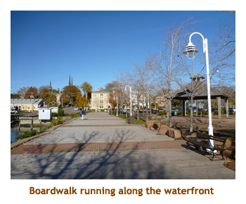

[ Home ] [ Travel ] [ Photography ] [ Pets ] [ Games] [ Rowing] [ Physics ]


Cruising on the Brilliance of the Seas
Travel
Cruises
Past Cruises (Diaries)
Future Cruises
Rogues Galleries
Land Trips
Diaries (Land Trips)
Hawai'i - Big Island - 04'01
Hawai'i - Maui - 05'02
Hawai'i - Big Island - 04'03
Hawai'i - Kaua'i - 09'04
Hawai'i - Big Island - 04'06
Hawai'i - Maui - 04'06
Mainland China - 05'07
Phoenix, Arizona - 12'07
Greek Isles - 05'08
Hawai'i - Kaua'i - 09'08
Hawai'i - Big Island - 09'09
Hawai'i - Maui - 05'12
Hawai'i - Big Island - 04'13
Ireland - 08'13
Mexico - Cancun 11'13
France/Belgium/Lux 07'15
Hawai'i - Big Island - 05'17
England / Wales - 06'17
Hawai'i - Big Island - 09'19
Photography
Cameras
Underwater
Pets
Tara
Blackie
Whitey
Muffy
Ollie
Rusty
Fluffy
Rufus&Dufus
Games
Rowing
Physics
Rating (out of 5): Ship  Food
Food  Service
Itinerary
Service
Itinerary
We had talked about doing a Canada / New England cruise for several years before Marjorie finally booked it. Due to work committments, Marjorie could only book this end-of-season cruise, which was missing the more "exotic" ports like Newfoundland and St. Pierre (which is why I gave only 4 stars for the itinerary). However, beggars can't be choosers (as they say) and we settled for the more conservative itinerary. I must admit that I enjoyed the ports much more than I had expected.
Some random notes on the cruise as a whole:
The Brilliance has a double-occupancy capacity of 2100 passengers. Our cruise varied between 1998 and 2003 each day, so was almost full. There were very few kids on board. After the hurricane scare in St. John, the count dropped to 1885 people.
The East Coast really celebrates Hallowe'en. From Quebec City to Portland we saw many displays of pumpkins and witches, especially on commercial and public buildings. We were really surprised at the sophisticated decorations.
We really enjoyed our visits to the smaller towns / villages where the local residents pitched in to make our stay there enjoyable. It was easy to see that they were both proud of their towns and aware of the finiancial benefits to having a ship full of people wandering around the town. Some of the shops had signs or banners indicating that we were "the last cruise ship of the season", and that prices were marked down accordingly.
The ship's fitness center was as good as any we have seen, but it was always nearly empty. I have never seen that before. It was good for me as I could get the rowing machine without ever having to wait. (There were two rowers - a Concept II Model D and a Schwinn). Maybe this was a reflection of the age of the passengers!
The food menu and Diamond lounge have slid a bit, not in quality but in variety. For example, in the dining room I am used to having lamb at least every second night. On this cruise it was only served once in 11 days. The Diamond lounge usually serves complimentary wine, beer, liquers and a selection of mixed drinks. On the B they were only serving complimentary wine. As a result I have given the food only 4 stars.
Pre-cruise, Day 1 (Oct 21, 22) - Arriving in Quebec City and Boarding
The shuttle arrived at 5:00 AM to take us to the airport. We were there by 5:30 for our 7:00 flight to Toronto. The flight was delayed by about 1/2 hour, and we arrived in TO about 1:00 PM. We had lunch at the A&W, and then waited a few hours for our 6:30 PM connecting flight to Quebec City. It was dark when we landed at 8:00, and we cabbed it straight to the hotel. Marjorie had gotten a very good TA price for the Chateau Frontenac - what a gorgeous hotel!
The next morning was overcast and a bit drizzly. We walked around the vicinity
of the hotel. The Hallowe'en decorations were amazing. They were everywhere,
just like Christmas. The City Hall had a wonderful display which included a 12
foot witch. We got back to the hotel about 11:30 to checkout. Then we dragged our
bags down through the "old town" to the ship, about 10 minutes away.
The cruise terminal was quite empty. Our check-in was very quick and we were on the ship by 12:00 noon. We had lunch in the Windjammer Cafe and got to our room just as the cabins were opened at 1:00. Our suitcases had already been delivered, but we decided to go out for a walk and unload them later. We exited the gangway and headed to the farmer's market. We mistakenly took a much longer route, but it was a nice walk. Marj bought some maple syrup at the market. We walked a little further, past the Via train station to a Metro grocery store. I bought some Pepsi and Marjorie got some juices.
We walked back to the ship,
returned to our cabin and emptied our suitcases. There was lots of cupboard
space and drawers for everything. We then wandered the ship
for a bit to refamiliarize ourselves with the layout. We had done a 27 day cruise on
this same ship in 2006, so it was nice to see it again.
5:00 PM was Diamond Member Happy Hour at the StarQuest Lounge,
so we picked up a complementary glass of wine each and carried them down to dinner.
This would become our custom each night. - head to the happy hour at 5:00,
grab some wine, then head for the food.
Our dinner time for the cruise was 5:30 which is unusually early. We typically
didn't get served until after 6:00, so it worked out OK. Tonight I had prime rib.
The entertainment for the evening
was a juggler who's patter was so-so, but his juggling was excellent.
Day 2 (Oct 23) - Another day in Quebec City
Today was a second day in QC, and the weather was gorgeous blue sky.
We were up at 8:00 and had breakfast in the buffet. We headed off the ship and
into the old town - just minutes from the ship. We worked our way up the hill through the town,
ending up on the huge wooden boardwalk in front of the Hotel Frontenac. We walked the
entire length of the boardwalk to the Citadel (next to the Plains of Abraham). We poked
our heads into the citadel grounds, but you had to have a tour guide to see most of it.
We walked over to the city gate and then down the main street back into the old town.
It was a wonderful walk and we arrived back at the ship at 1:00. I had some pizza in
the buffet and then we read for a bit. Muster drill was at 4:00 as we were to sail at 5:00.
There was a slight delay in loading all the provisions aboard the ship, so we actually
sailed at 5:30. For dinner I had crab and cheese ravioli - very good! The entertainment
was a pianist. His repertoire was very jazzy (and loud) so we didn't stay for the whole show.
 |
Day 3 (Oct 24) - A day at sea (river?)
Today was a day at sea (acutally we were on the St. Lawrence River). It
was another nice sunny day. We were up about 7:30 and did breakfast in the
private Diamond Members restaurant (Zephyr). Note: I should explain the
Diamond Club. It is "frequent cruiser" club for anyone that has cruised
every ship on the seas and is over one hundred years old (or so it seems).
At that point you get some freebies - the ship's sucky internet, cheap laundry
and some free booze. After a read and a wander, we did a lecture at
10:00 and then trivia at 10:30. The Cruise Critic Meet & Greet was at 11;00
and we won several nice prizes including a wrist watch , a travel bag and
a bingo pack. At lunch they had our old favorite in the main dining room
- the "Tutti Salad" bar. It was wonderful. We played afternoon trivia and
then went to bingo at 4:00. Our bingo pack we had won didn't fare too well,
but we had fun anyway. Tonight was the first formal night. Our dinner table
was an 8 seater. It was fixed dining and we really enjoyed all of our dinner
mates.I had a seafood brochette for dinner. We skipped the entertainment
and instead listened to a piano trio and talked to some folks. it was a
nice day at sea!
Day 4 (Oct 25) - Visiting the village of Gaspe
Our first port of the cruise was Gaspe. Once again a beautiful sunny day, about 11 degrees. I was up at 7:00 so headed to the gym while Marjorie slept in. As the ship anchored in the bay, we had breakfast in the Zephyr (Diamond Restaurant). We hustled down to the tender shuttle, motored to the dock and then headed out for a walk around town. There were seniors (volunteers) and kids (university class) stationed at every street corner to answer questions and give directions. This was real small town (pop. 15,000) hospitality! We visited the main church and then did the shopping center. It was a beautiful little town!
We walked until lunch time and then did the salad bar onboard. The ship
sailed at 2:00 PM as we had a long way to go to our next port. We did trivia,
read and wandered the ship. At 5:00 we picked up our free wine and headed
to the dining room. For dinner I had a beef fillet. The entertainment was
a singer / impressionist who did a great Neil Diamond and Elvis Presley.
We had seen him last November on the Liberty of the Seas and he was excellent.
We went to the "Where in the World" trivia at 9:45 and did really well.
Clocks ahead one hour tonight. Note: The Americans aboard and
even the captain pronounce Gaspe as "Gasp!".
Day 5 (Oct 26) - Beautiful Charlottetown, PEI
Today we woke up to another blue sky day. Woohoo! Up at 7:00, I did the
gym and then we went to the Zephyr Restaurant for breaky at 8:40. It closed at 8:30 (bummer),
so we went up to the buffet. We spent the entire morning wandering around the streets of
Charlottetown. There was a large bordwalk that ran all along the waterfront.
Heading inland, we visited Confederation Place, the Cathedral Basilica and some
lesser buildings. We also investigated some novelty businesses such as "Cows"
(ice cream and cow souvenirs) and the "Anne of Green Gables Chocolate Shop".
And, of course, there were the ubiquitous restaurants specializing in lobster dinners.
There were two bus companies doing Ho-Ho tours - the Big Pink Bus and
the HippopotaBus.
It was really nice with the sunshine and the fall colours all around. I think that we
hit 11 degrees again. We returned back to the ship about 12:30.
We had lunch in the buffet (the salad bar in the main dining room was only
open on sea days). Afterwards Marjorie headed back into town to use the free
computer facilities at the info center. I read for a while and then joined in the
afternoon trivia. We did our usual Diamond Bar raid for the free wine and headed for dinner
just as the ship set sail. For dinner I had sea scallop linguini. It was excellent, but the
scallops were few and far between. I asked the water for more scallops and he
came out with a whole bowl of them. What a feast! I think I mentioned it before
but we really did enjoy our table of friends each night. The evening entertainment
was a soprano who did a bit of opera, but mostly show tunes and pop songs.
She was quite good.
|  |
Day 6 (Oct 27) - Stop at Sydney, NS
This morning we arrived at the village of Sydney in Cape Breton. It was our
first port of the trip which we hadn't been to before, and also the first at which we
had booked an excursion. Once again it was a sunny day with temps forecast
to reach 10 degrees. However, Hurricane Sandy was looming in our future and
the captain began daily updates of the storm's progress and what it could mean
to us. We had breakfast in the buffet and then headed to our 8:45 tour. We boarded
the bus and off we went. We did a brief tour through the town and then headed inland
towards the town of Baddeck. We followed an arm of the inlet that fed into the
inland salt lake called Bras D'Or. The trees on the hills were beautiful - yellows,
oranges, browns, reds. Although most of the colour was deciduous trees, there
were some glorious stands of yellow Tamarac (Larch).
After about 1.25 hours we reached our destination. Baddeck is a tiny village
in size but is huge in history. It is the home of the laboratory of Alexander
Graham Bell.
We parked at the museum dedicated to his many interests and inventions.
He was into many things other than the telephone that he is most known
for, including airplanes, hydrofoils, phonographs, sheep breeding, you name
it! The museum was excellent and contained a full size replica of an experimental
hydrofoil boat. There were three or four excellent movies shown throughout
the museum with actual footage of Bell's experiments. We drove back to Sydney
going partly along a different route. We were back to the ship by 12:00
noon. We had lunch at the buffet and then spent part of the afternoon wandering
the streets of Sydney. At the main church there was a craft fair that opens
each time a cruise ship arrives. They had some beautiful quilting there.
On the dock there was a "sculpture" of the world's largest fiddle. It was
huge! We were back for afternoon trivia. For dinner I had "mixed grill"
(lamb, ham, chicken, sausage). The entertainment was the same juggler we
had seen earlier, but with a brand new show. He was great. Note:
Tonight the captain gave his storm update and indicated the worst of the
storm would pass when we were scheduled to be in Bar Harbor. As this was
a tendering port, we would probably skip it and instead spend two days in
St. John.
Day 7 (Oct 28) - Visiting friends in Halifax, NS
Today we were returning to Halifax to visit some workmates from Nortel,
Calgary who had recently moved to Halifax. It was another nice day - sunny
for most of the day, cloudy in the later afternoon. I was up at 7:00 and
did my bit in the gym. We had breakfast in the Zephyr. Then we headed out
in the sunshine and walked to the Atlantic Superstore for animal crackers
and juice. We were back to the ship at 10:30. We changed into better clothes
and left at 11:15 to walk to the pub to meet Dusty and Karin for lunch at
noon. We walked along the new waterfront boardwalk for part of the way.
As we passed St. Mary's, there were police on horseback diverting traffic
and a pipe band was coming out of the church. It was an annual police memorial
service. We had a nice lunch with K&D. Afterwards they drove us to their
rental house to see where they were living. Then we did a drive around
town and they dropped us off at the ship about 3:30. We were in time for
trivia. For dinner I had lamb chops - very tough! No one seemed to enjoy
the lamb. We skipped the entertainment and did bingo instead. I was the
first stander for "4 corners", but didn't win. Note: The captain
confirmed that Bar Harbor was definitely out and an extra day in the safety
of St. John Harbour was for sure.
Day 8 (Oct 29) - St. John, New Brunswick
I was up by 7:00 and went to the gym. Afterwards we had breakfast in Zephyr.
It was a lazy morning as we didn't dock in St. John until 10:00 AM. It was
an overcast and dark day, due to the effects of the storm I guess. It was
quite a contrast to the beautiful blue sky days we had had so far. We had
booked a tour for the day that would keep us mostly out of the weather.
The first part of the tour was a train ride around the head of the Bay of
Fundy. It was a privately owned train, including the tracks! (Owned by
the Irving family). It was
a short bus ride from the dock to the train. We were on the train for about
1 hour and saw the harbour, the "reversing falls", storage tanks for Moosehead
Beer, plus several landmarks. As we stopped by a wood chip processing plant
there was a truck being lifted into the air to dump it's load. The guide in
our train car was excellent and really knew his stuff. At the end
of the private track the bus was waiting for us for the second part of the
tour.
Our bus took us south along the coast of the Bay of Fundy. Although
it was very grey out, the foilage colours still stood out and it was easy to
see how beautiful it would look in the sunshine. After about 1.25 hours, we
arrived in the village of St. Andrew By-The-Sea. We did a bit of a drive
through the town and then were let off near the main street for 1.5 hours
on our own. It was 12:30 or so, so we found an interesting looking cafe
and stopped in for lunch. I had a lobster salad sandwich and it was
absolutely delicious. It had large chunks of lobster with a mayonaise
type sauce. Wonderful! Then we wandered the main street looking at
the quaint New England style buildings and shops. I think we were the
only tourists in town so it was quite deserted. There were several shops
that hosted whale watching, but they were all closed. We reboarded
the bus and did another tour through the town as the guide pointed out
the mansions of the rich and famous. Then we drove back to the ship
arriving at about 4:00 PM, just in time for trivia. For dinner I had shrimp
gyozas. The entertainment was a comedian / magician. He was very good.
Day 9 (Oct 30) - Itinerary change - a 2nd day in St. John
For our second day in St. John, the weather was gloomy again with some
rain showers. The ship had somehow put together some excursions for the day,
but we decided just to walk around on our own. The storm was on everyone's
mind and the biggest worry was that the local airports (Newark, JFK, La Guardia,
etc) would suffer damage from the hurricane and be shut down for several days.
Already hundreds of flights had been cancelled due to the storm. As
a result, a number of people bailed the cruise in St. John (and later in Portland) to
take flights that were not affected. We decided to look into it for ourselves so
walked to the library to use the computers there. It turned out that flights were
totally booked for the next three days and they were very expensive. We
decided to continue on the cruise and take our chances.
In the same complex as the library was a local museum. It was very resonable ($6) and gave in/out privileges for the day. It was 11:00 AM, so we did the 45 minute movie about the Bay of Fundy and then headed back to the ship for lunch. It was our favorite salad bar lunch. Right after eating we hiked back to the museum to continue our tour. The museum was wonderful with a section on whales and sea mammals, an art gallery of local artists and a section on the local history of the area from the 1700's to the present. Once again we returned to the ship, just in time for the 4:00 sailaway and afternoon trivia. For dinner I had prime rib. There were also bay scallops on the menu so I asked for a bowl of them to put on my prime rib - surf and turf! We skipped the entertainment and read instead. The captain gave another storm update. We would be running from St. John to Portland right through a big storm. Later tonight, as we sailed past the Bar Harbor area, the ship would experience some high winds and seas giving us a rocky ride. Just after dinner the ship started to move a bit. Oh, oh!
Day 10 (Oct 31) - Entry to US - Portland, ME
We were expecting the worst through the night. However, after the slight movement the previous evening - nothing! I woke up 2 or 3 times during the night and there was no movement at all. The captain appologised for scaring us all, but everyone was just happy that we had been spared! Today we got up at 6:30 as we had to go through US immigration at 6:45. Things were all screwed up though and we finally were cleared by 8:45. We had a late breakfast and then went out and wandered the town. The motif was red brick - buildings, sidewalks, everywhere you looked. We stopped at the library to use the computers. We popped back to the ship for lunch and then went back to the library so that Marjorie could do her TA job. We stopped at a hotel and used their house phone to call a cruise line. Whatever it takes! We stopped at Buy Rite for candies and stocking stuffers. We were back to the ship at 3:00 for our early sailing and read a bit and played afternoon trivia. For dinner I had butterflied shrimp. There were loads of people who had dressed up for Hallowe'en. The entertainment was a Motown singing group called Horizon. They were quite good.
Day 11 (Nov 1) - A second day at sea
Today was our second day at sea and the final day of the cruise. Always a sad day!
I was up at 6:30 and went to the gym. As usual, it was almost empty. We had breakfast
at Zephyr. The weather was cloudy in the morning, but sunny in the afternoon. You
would never have known that a hurricane just went through here. We played morning
trivia, wandered and read. Very relaxing. For lunch we went to the salad bar. Yummy!
After lunch we packed our suitcases and then played afternoon trivia. After missing every trivia by
one point throughout the cruise, we finally won. The kicker was a tough geology question
and we just happened to have the ship's lecturer - a geologist - on our team. Woohoo!
For dinner I had roast turkey. We said goodbye to our dinner mates and trivia mates.
The entertainment was another comedian. He was very funny. We put our suitcases
out in the hall and went to bed.
Day 12 (Nov 2) - Bayonne, NJ and the trip home
It was another overcast day, but we were heading home! The airports were
open again (except La Guardia) and all our worrying was for naught. We had
breakfast, grabbed our carry-on stuff and left the ship about 8:30. We did the shuttle
bus to the airport. The lineups were quite small so we checked in and went through
security relatively quick. Our flight to Chicago was at 1:30. In Chicago we had
lunch at a burger place, then continued on our journey to Calgary. Neither
aircraft was full which was strange when so many flights had been cancelled
just 3 days ago. What happened to all those people? We landed at
6:30 PM in Calgary and Chrissy and Matt were there to pick us up. We
were home by 7:30 and the house and the kitties were all OK. Despite the
storm worries, the cruise had been excellent. Maybe a future cruise will
get us to Bar Harbor and other maritime ports we have not yet visited.